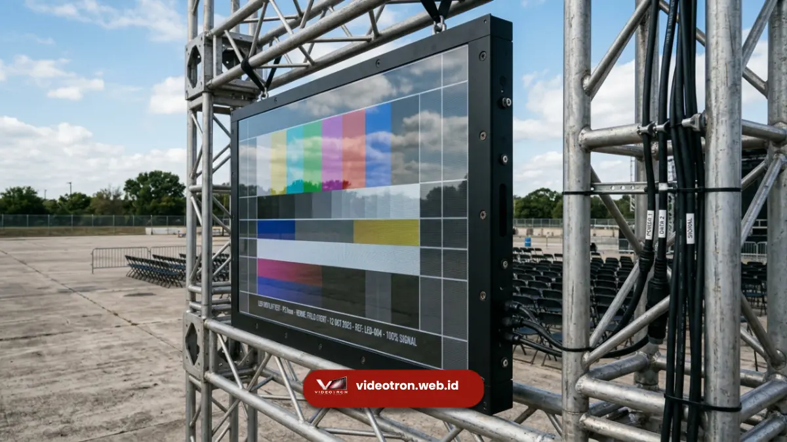

Spesifikasi videotron outdoor konser mencakup tingkat kecerahan pancaran tinggi, sistem perlindungan anti air mutlak, dan rasio penyegaran grafis berkecepatan cepat untuk menjamin visual panggung yang sempurna.
Penyelenggaraan acara musik di lokasi terbuka membawa tantangan teknis lingkungan yang tidak terprediksi seperti paparan radiasi ultraviolet secara berlebihan atau badai presipitasi mendadak.
Oleh karena itu, arsitektur teknis perangkat luar ruangan didesain secara revolusioner untuk tetap beroperasi normal menghibur puluhan ribu lautan manusia terlepas dari anomali kondisi alam.
- Kecerahan panel dirancang untuk mengalahkan intensitas sinar matahari terik lapangan.
- Sertifikasi perlindungan material memastikan debu halus dan air hujan tidak tembus.
- Laju penyegaran matriks tinggi meniadakan artefak visual berkedip di lensa kamera.
- Mekanisme sirkulasi udara khusus menjauhkan komponen dioda kritis dari panas berlebih.
Selain masalah penetrasi cahaya mentari, parameter kinerja ketahanan komponen elektronik keras terhadap suhu operasional dinamis menjadi titik pembeda mutu antar generasi panel digital.
Perangkat spesifikasi komersial tingkat atas dilengkapi perisai insulasi khusus yang mencegah terjadinya kondensasi kelembapan udara mikro pada modul sirkuit arus searah terpadu. Kepahaman teknisi tentang anatomi teknis ini krusial saat menyusun matriks kebutuhan investasi pemesanan visual dengan pihak penyuplai komersial terkemuka di pasar domestik.
Berapa Kecerahan Optimal Spesifikasi Videotron Outdoor Konser?
Kecerahan optimal spesifikasi videotron outdoor konser berada pada rentang angka enam ribu hingga delapan ribu nits untuk mengalahkan secara absolut intensitas paparan sinar matahari siang hari.
Nilai luminansi yang sangat agresif ini dicapai melalui penggunaan komponen dioda berbahan dasar emas tingkat kemurnian tinggi yang efisien mendistribusikan energi cahaya.
Kemampuan pemancaran luminositas ekstrem memastikan tampilan logo komersial sponsor maupun wajah musisi terlihat berdimensi jelas pada radius jarak pandang hingga ratusan meter membelah lapangan festival.
Lebih canggih lagi, panel spesifikasi panggung profesional selalu dipersenjatai sensor kalibrasi cahaya otomatis terintegrasi yang mampu mendeteksi penurunan intensitas sinar latar dari lingkungan nyata sekitar.
Saat matahari terbenam menyisakan kegelapan senja, perangkat akan menurunkan tingkat kecerahannya secara mandiri bertahap agar retina mata penonton barisan terdepan tidak mengalami sensasi menyilaukan yang menyiksa mata.
Harmoni penyesuaian dinamis luminositas pancaran menjadi indikator kematangan rekayasa arsitektural produsen layar luar ruangan berstandar elite.
Apa Peran Refresh Rate Tinggi pada Dokumentasi Visual Kamera?
Peran refresh rate tinggi pada dokumentasi visual kamera memusnahkan secara drastis kemunculan cacat bayangan garis hitam horizontal yang berkedip sangat mengganggu pada hasil tangkapan lensa siaran langsung televisi.
Laju penyegaran spesifikasi minimal berkisar antara tiga ribu delapan ratus hertz untuk selaras dengan penangkapan kecepatan rana kamera videografi profesional milik tim peliput media berita resmi.
Tanpa frekuensi penyegaran vertikal tingkat tinggi tersebut, materi foto maupun liputan video komersial pertunjukan tersebut akan tampak bernuansa amatir dan sangat merugikan nilai reputasi promotor musik.
Selain memuluskan jepretan dokumentasi elektronik kamera, tingkat responsivitas panel berfrekuensi cepat ikut mendongkrak sensasi transisi gerak cepat dari berbagai materi tata letak animasi grafis.
Ketika disjoki memutar musik tempo cepat dengan efek visual hentakan kilat, pemrosesan laju pigura tinggi sanggup merender perpindahan transisi warna piksel murni dengan akurasi sepersekian milidetik yang luar biasa mengagumkan.
Ketajaman grafis bebas artefak kekaburan gambar mendikte secara harfiah kepuasan visual organik pada memori otak ribuan tiket pemirsa pertunjukan.

Mengapa Sertifikasi Ingress Protection Sangat Penting di Luar Ruangan?
Sertifikasi tingkat Ingress Protection sangat penting di luar ruangan guna memvalidasi kapabilitas absolut segel selubung perangkat mekanis dalam menangkal invasi fatal dari materi zat cair maupun partikel pasir korosif.
Kelas perlindungan bertanda ganda angka IP65 merupakan standar kewajiban keselamatan esensial di mana peranti elektronik mampu beroperasi total di tengah terjangan badai air bertekanan kencang dari segala arah sudut persimpangan vertikal.
Kode standarisasi industri global ini memberikan ketenangan mental sempurna bagi pihak investor acara saat langit stadion mendadak muram oleh mendung tebal merisaukan.
Teknik pabrikasi segel berstandar industri aeronautika diaplikasikan pada bingkai panel, pintu konektor kabel optik, hingga modul penyuplai daya kelistrikan utama demi menetralisir kebocoran arus listrik arus pendek berisiko tinggi.
Desain rongga topeng pelindung modul piksel yang berlapis karet elastomer juga membentengi dioda kristal rapuh secara fisik atas hantaman keras kerikil maupun lemparan botol acak dari area kerumunan yang tidak terkontrol.
Fondasi kekuatan isolasi cangkang tersebut adalah kunci umur pakai awet layar portabel panggung kelas pekerja keras di belantara ekosistem dunia hiburan ruang terbuka nyata.
Pesan Perangkat Visual Spesifikasi Tinggi di vendorvideotron.web.id
Memesan perangkat visual spesifikasi tinggi di vendorvideotron.web.id membuka gerbang komersial menuju penguasaan ruang pertunjukan lapangan bermodalkan aset teknologi layar digital ketahanan ekstrem standar internasional tanpa cacat.
Kami membekali inventaris infrastruktur penyewaan visual panggung kami dengan modul unggulan bersertifikat proteksi perlindungan absolut IP65 bertingkat intensitas nits maksimal yang melibas paparan mentari.
Para kurator logistik alat kami menyeleksi ketat unit perangkat yang mempunyai stabilitas matriks frekuensi laju paling optimal untuk kebutuhan siaran rekam lensa stasiun komersial ternama.
Menghadapi agenda pertunjukan lapangan luar skala raksasa yang membutuhkan tingkat keandalan materi kelistrikan absolut tidak memberi celah toleransi pada kualitas alat usang penyedia tak berpengalaman.
Lindungi nilai gengsi tinggi investasi properti musik Anda bersama tim insinyur visual kami melalui tautan gerbang utama pesanan di vendorvideotron.web.id segera mungkin pada hari ini juga.
Staf penaksir kapasitas panggung spesialis kami menantikan panggilan interaktif komersial Anda guna mendiskusikan rancang bangun modul layar terkuat di pasar hiburan Nusantara saat ini secara merinci.
Karakteristik teknis panel visual kelas ruangan terbuka mutlak berpusat pada perpaduan agresi pancaran gelombang nits intensitas memukau, frekuensi penyegaran kilat bebas cedera kedip kamera komersial, serta insulasi cuaca berproteksi kedap tingkat tinggi absolut.
Meremehkan ketiga pilar integritas spesifik layar lapangan luar akan bermuara langsung pada petaka sabotase kepuasan pemirsa festival di siang hari maupun badai sore krusial.
Demi keandalan sistem peranti keras mutlak tersebut, amankan logistik persewaan perangkat komersial acara besar Anda semata melalui fasilitas utama kami dengan berkunjung tuntas ke vendorvideotron.web.id.

Hawa Nadira
LED Technology Consultant dan Visual Educator
Konsultan dan spesialis solusi display digital berdedikasi tinggi yang fokus membagikan panduan edukatif mengenai penerapan teknologi layar LED videotron untuk kebutuhan interior modern di Indonesia.